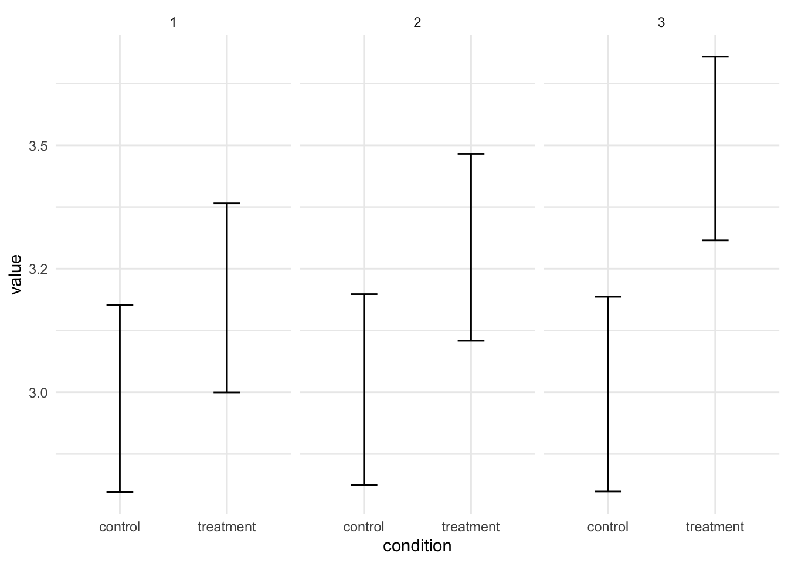

Code
library(MASS)
library(tidyverse)
library(effectsize)
library(broom)
library(viridis)
theme_set(theme_minimal())
options(
knitr.kable.NA = "",
digits = 2
)
# Set number of loops in the power simulations
s <- 1000September 10, 2023
Should you power for multiple tests when conducting a power analysis? The answer is probably yes. Below I cover a few scenarios in which I think it makes sense to power for multiple tests.
Run the following code to get started. We’ll be using simulations to conduct the power analyses.
Let’s say that we want to test three hypotheses. The three hypotheses all pertain to differences between two groups. This could be the case when we have a study with two conditions and three different outcome measures. Let’s first simulate some data once and then look at the different ways to power for this scenario.
# Parameters
Ms <- c(3, 3, 3, 3.2, 3.3, 3.5)
SDs <- c(1, 1, 1, 1, 1, 1)
N <- 100
# Prepare parameters
Sigma <- matrix(nrow = length(SDs), ncol = length(SDs), 0)
diag(Sigma) <- SDs^2
# Simulate once with empirical = TRUE so we can calculate the effect sizes and
# plot the data with the exact parameters that we set
samples <- mvrnorm(N, mu = Ms, Sigma = Sigma, empirical = TRUE)
# Prepare data
colnames(samples) <- c(
"control_1", "control_2", "control_3", "treatment_1", "treatment_2",
"treatment_3"
)
data <- as_tibble(samples)
data_long <- data %>%
pivot_longer(
cols = everything(),
names_to = c("condition", "outcome"),
names_pattern = "(.+)_(.)"
)Let’s visualize the data to get a better grasp of what the data looks like.

These are the three effect sizes associated with our hypotheses and we want to have enough statistical power to detect all of them.
One approach is to only power for the smallest effect.
0.2 = 788 0.3 = .99997 0.4 = .9999
---
title: Should you power for multiple statistical tests?
description: "When conducting a power analysis, should you power for a single test or multiple tests? In this blog post I provide a few examples of when you should power for multiple tests."
date: 2023-09-10
categories:
- statistics
- power analysis
- simulation
code-fold: show
code-tools: true
toc: true
toc-depth: 2
draft: true
---
# Introduction
Should you power for multiple tests when conducting a power analysis? The answer is probably yes. Below I cover a few scenarios in which I think it makes sense to power for multiple tests.
## Setup
Run the following code to get started. We'll be using simulations to conduct the power analyses.
```{r}
#| label: setup
#| message: false
library(MASS)
library(tidyverse)
library(effectsize)
library(broom)
library(viridis)
theme_set(theme_minimal())
options(
knitr.kable.NA = "",
digits = 2
)
# Set number of loops in the power simulations
s <- 1000
```
## The scenario
Let's say that we want to test three hypotheses. The three hypotheses all pertain to differences between two groups. This could be the case when we have a study with two conditions and three different outcome measures. Let's first simulate some data once and then look at the different ways to power for this scenario.
```{r}
#| label: scenario
# Parameters
Ms <- c(3, 3, 3, 3.2, 3.3, 3.5)
SDs <- c(1, 1, 1, 1, 1, 1)
N <- 100
# Prepare parameters
Sigma <- matrix(nrow = length(SDs), ncol = length(SDs), 0)
diag(Sigma) <- SDs^2
# Simulate once with empirical = TRUE so we can calculate the effect sizes and
# plot the data with the exact parameters that we set
samples <- mvrnorm(N, mu = Ms, Sigma = Sigma, empirical = TRUE)
# Prepare data
colnames(samples) <- c(
"control_1", "control_2", "control_3", "treatment_1", "treatment_2",
"treatment_3"
)
data <- as_tibble(samples)
data_long <- data %>%
pivot_longer(
cols = everything(),
names_to = c("condition", "outcome"),
names_pattern = "(.+)_(.)"
)
```
Let's visualize the data to get a better grasp of what the data looks like.
```{r}
#| label: visualization
ggplot(data_long, aes(x = condition, y = value)) +
facet_wrap(~outcome) +
stat_summary(fun.data = "mean_cl_boot", geom = "errorbar", width = .25)
```
These are the three effect sizes associated with our hypotheses and we want to have enough statistical power to detect all of them.
## Powering for the smallest effect
One approach is to only power for the smallest effect.
0.2 = 788
0.3 = .99997
0.4 = .9999